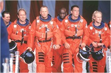
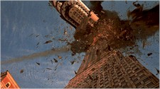

Contents | Features | Reviews | News | Archives | Store |
 |
|
| Movie Credits | Buy It! |
Armageddon
Review by Eddie Cockrell
Posted 2 July 1998
| Directed by Michael Bay Starring
Bruce Willis, Billy Bob Thornton, Screenplay by Jonathan Hensleigh, J.J. Abrams, |
Inevitably bigger and infinitely louder than the similar-themed Deep Impact (surprise: 1998's biggest hit to date!), the engagingly dunder-headed Armageddon is, for better or worse, precisely where high concept, big-budget, technology-laden Hollywood moviemaking is at just now. Neither as blurrily stupid as The Rock nor as cheerfully irreverent as Con Air (über-producer Jerry Bruckheimer's two previous summer spectacles), Armageddon is two and a half hours of well-tooled, flag-waving fun that survives its pre-release bombast (don't be fooled by the trailers selling it as a love story) to emerge as a holiday event that may not rival Will Smith's last two years worth of world-saving (Independence Day and Men in Black) in the all-important race for global box office bucks but should be the default attraction to beat over the artificially long holiday weekend and well into the lucrative summer season.
Essentially a class conflict larded over with testosterone-fueled patriotic posturing (what do you expect from a movie that opens with narration by Charlton Heston?), the action pits NASA eggheads, spearheaded by frustrated-astronaut-turned-administrator Dan Truman (Billy Bob Thornton, fine against type) against maverick oilwell rigger Harry Stamper (an almost smirkless Bruce Willis), who is hired to first train, then lead a group of one-dimensional miscreants (ex-employees all) on a daring mission to fly to, land on, drill a hole in, and detonate a nuclear device within a meteor the size of Texas – a "global killer," in NASA-speak – hurtling towards earth. Further disrupting Truman's show is Stamper's pack of jokers, including hothead protege A.J. Frost (hunky but gawky Ben Affleck), who spends his time either countermanding Harry's authority or wooing his mentor's daughter Grace (moist-eyed Liv Tyler) – usually in a spectacularly scenic location or, in an unintentionally funny sequence, a dormant rocket booster.
Most of the other dirty dozen or so roughnecks are straight out of central casting, Bruckheimer style. There's the priapic Rockhound (Steve Buscemi, essentially reprising the shrewd wiseacre he played in Con Air), reluctantly resourceful Russian cosmonaut Lev Andropov (Peter Stormare, Buscemi's tightly-wrapped partner from Fargo), can-do right hand man Chick (Will Patton, underutilized again), emotionally frail big man Max (Ken Campbell), and philosophizing stoner Oscar Choi (Owen Wilson), among others. William Fichtner (Contact) is suitably shifty in an ill-conceived sabatoguish subplot, while Jessica Steen's shuttle pilot character might've made for a more interesting major character than some on display. Sharp-eyed buffs can catch genre mainstays Lawrence Tierney, Grace Zabriskie, and newly ubiquitous Lars von Trier regular Udo Kier in atmospheric yet miniscule support.
 A sweeping special
effects extravaganza, Armageddon bids for gravity in shots of anxious citizenry
awaiting the results of the mission in countries around the world, as first New York
(which has taken a real pummeling this year), then Shanghai, and even Paris fall victim to
stray chunks that herald the arrival of the big bang. As large as it is, though, the movie
finds time for more humorous, idiosyncratic gestures, including yet another jab at Noah
Emmerich and Dean Devlin, producers of Godzilla
(following hot on the heels of Fox Mulder's peeing on an Independence Day poster in The X Files: Fight the Future), an early bit in which
Stamper drives golf balls from his oil rig to a Greenpeace ship and liberal sprinkles of
the same cockeyed junk culture ruminations that gave Con Air such a distinctive
voice amidst all the cliched violence (not surprisingly, Bruckheimer pressed four script
doctors into service tweaking the work of the five credited writers, giving Armageddon
the same quip-o-rama feel).
A sweeping special
effects extravaganza, Armageddon bids for gravity in shots of anxious citizenry
awaiting the results of the mission in countries around the world, as first New York
(which has taken a real pummeling this year), then Shanghai, and even Paris fall victim to
stray chunks that herald the arrival of the big bang. As large as it is, though, the movie
finds time for more humorous, idiosyncratic gestures, including yet another jab at Noah
Emmerich and Dean Devlin, producers of Godzilla
(following hot on the heels of Fox Mulder's peeing on an Independence Day poster in The X Files: Fight the Future), an early bit in which
Stamper drives golf balls from his oil rig to a Greenpeace ship and liberal sprinkles of
the same cockeyed junk culture ruminations that gave Con Air such a distinctive
voice amidst all the cliched violence (not surprisingly, Bruckheimer pressed four script
doctors into service tweaking the work of the five credited writers, giving Armageddon
the same quip-o-rama feel).
Yet within the cliched fray there can be glimpsed some legitimate, if fleeting, grace notes, including a leg brace that eloquently explains Truman's yearning to make the trip, the underlying gravity of the ramshackle Russian space station at which they refuel, Chick's achingly predictable subplot involving the child who doesn't even know him (but is encouraged to bond once Dad becomes famous) and even the valuable lessons about team playing in moments of crisis (even though, like most movies of this sort, the narrative violates its own precepts for the sake of gratuitous tension). Less successful is the whole Affleck-Tyler romance, which feels awfully perfunctory and leaves Liv stranded at Mission Control for most of the movie looking ruminative and distraught.
In Michael Bay, Bruckheimer has found a directorial soulmate. Mercifully, the director of The Rock has tempered his frantic style somewhat (Tsui Hark he ain't), punctuating the movie with shots of matter and rockets flying straight into the camera (low-budget 3-D genre films did the same thing four decades ago, but quietly). Ex-Yesman Trevor Rabin's titanically derivative score is punctuated by no less than four Aerosmith songs (howled, of course, by Liv Tyler's eternally jaunty father Steven) as well as ZZ Top's "La Grange" and Chantal Kreviazuk's cover of John Denver's "Leaving on a Jet Plane," while Michael White's production design successfully blends the realistic with the fantastic (does NASA really have a huge hangar where everyone can get weightless?). At least a dozen special effects houses have delivered some truly jaw-dropping sequences, prompting the usual advisory with movies of this ilk that patrons seek out the biggest and best-equipped theaters possible.
Forewarned is forearmed: while unlikely to make a deep impact on critics' year-end best-of list (unless the newly-minted industry lapdog American Film Institute comes out with a supplementary roster of easily-digestible populist classics – really, Pretty Woman?), Armageddon will quench an undiscerning thirst for big, loud summer entertainment. The best advice is to let Bruckheimer be Bruckheimer and order extra butter-flavored product as Willis and company kick a little asteroid.
Contents | Features | Reviews | News | Archives | Store
Copyright © 1999 by Nitrate Productions, Inc. All Rights Reserved.